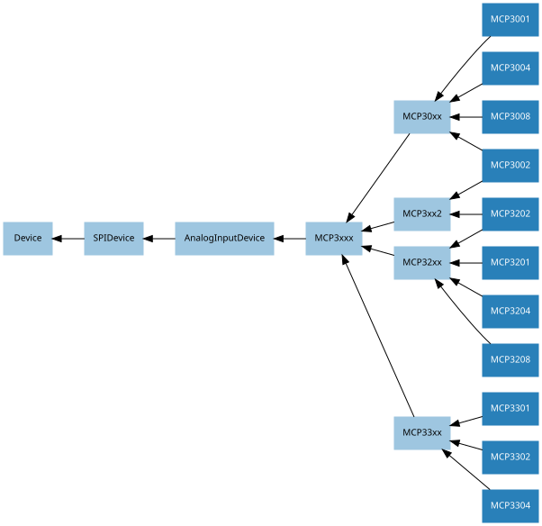

16. API - SPI Devices
SPI stands for Serial Peripheral Interface and is a mechanism allowing compatible devices to communicate with the Pi. SPI is a four-wire protocol meaning it usually requires four pins to operate:
A “clock” pin which provides timing information.
A “MOSI” pin (Master Out, Slave In) which the Pi uses to send information to the device.
A “MISO” pin (Master In, Slave Out) which the Pi uses to receive information from the device.
A “select” pin which the Pi uses to indicate which device it’s talking to. This last pin is necessary because multiple devices can share the clock, MOSI, and MISO pins, but only one device can be connected to each select pin.
The gpiozero library provides two SPI implementations:
A software based implementation. This is always available, can use any four GPIO pins for SPI communication, but is rather slow and won’t work with all devices.
A hardware based implementation. This is only available when the SPI kernel module is loaded, and the Python spidev library is available. It can only use specific pins for SPI communication (GPIO11=clock, GPIO10=MOSI, GPIO9=MISO, while GPIO8 is select for device 0 and GPIO7 is select for device 1). However, it is extremely fast and works with all devices.
16.1. SPI keyword args
When constructing an SPI device there are two schemes for specifying which pins it is connected to:
You can specify port and device keyword arguments. The port parameter must be 0 (there is only one user-accessible hardware SPI interface on the Pi using GPIO11 as the clock pin, GPIO10 as the MOSI pin, and GPIO9 as the MISO pin), while the device parameter must be 0 or 1. If device is 0, the select pin will be GPIO8. If device is 1, the select pin will be GPIO7.
Alternatively you can specify clock_pin, mosi_pin, miso_pin, and select_pin keyword arguments. In this case the pins can be any 4 GPIO pins (remember that SPI devices can share clock, MOSI, and MISO pins, but not select pins - the gpiozero library will enforce this restriction).
You cannot mix these two schemes, i.e. attempting to specify port and
clock_pin will result in SPIBadArgs being raised. However, you can
omit any arguments from either scheme. The defaults are:
port and device both default to 0.
clock_pin defaults to 11, mosi_pin defaults to 10, miso_pin defaults to 9, and select_pin defaults to 8.
As with other GPIO based devices you can optionally specify a pin_factory argument overriding the default pin factory (see API - Pins for more information).
Hence the following constructors are all equivalent:
from gpiozero import MCP3008
MCP3008(channel=0)
MCP3008(channel=0, device=0)
MCP3008(channel=0, port=0, device=0)
MCP3008(channel=0, select_pin=8)
MCP3008(channel=0, clock_pin=11, mosi_pin=10, miso_pin=9, select_pin=8)
Note that the defaults describe equivalent sets of pins and that these pins are compatible with the hardware implementation. Regardless of which scheme you use, gpiozero will attempt to use the hardware implementation if it is available and if the selected pins are compatible, falling back to the software implementation if not.
16.2. Analog to Digital Converters (ADC)
The following classes are intended for general use with the integrated circuits they are named after. All classes in this section are concrete (not abstract).
16.2.1. MCP3001
- class gpiozero.MCP3001(*args, **kwargs)[source]
The MCP3001 is a 10-bit analog to digital converter with 1 channel. Please note that the MCP3001 always operates in differential mode, measuring the value of IN+ relative to IN-.
- property value
The current value read from the device, scaled to a value between 0 and 1 (or -1 to +1 for certain devices operating in differential mode).
16.2.2. MCP3002
- class gpiozero.MCP3002(*args, **kwargs)[source]
The MCP3002 is a 10-bit analog to digital converter with 2 channels (0-1).
- property channel
The channel to read data from. The MCP3008/3208/3304 have 8 channels (0-7), while the MCP3004/3204/3302 have 4 channels (0-3), the MCP3002/3202 have 2 channels (0-1), and the MCP3001/3201/3301 only have 1 channel.
- property differential
If
True, the device is operated in differential mode. In this mode one channel (specified by the channel attribute) is read relative to the value of a second channel (implied by the chip’s design).Please refer to the device data-sheet to determine which channel is used as the relative base value (for example, when using an
MCP3008in differential mode, channel 0 is read relative to channel 1).
- property value
The current value read from the device, scaled to a value between 0 and 1 (or -1 to +1 for certain devices operating in differential mode).
16.2.3. MCP3004
- class gpiozero.MCP3004(*args, **kwargs)[source]
The MCP3004 is a 10-bit analog to digital converter with 4 channels (0-3).
- property channel
The channel to read data from. The MCP3008/3208/3304 have 8 channels (0-7), while the MCP3004/3204/3302 have 4 channels (0-3), the MCP3002/3202 have 2 channels (0-1), and the MCP3001/3201/3301 only have 1 channel.
- property differential
If
True, the device is operated in differential mode. In this mode one channel (specified by the channel attribute) is read relative to the value of a second channel (implied by the chip’s design).Please refer to the device data-sheet to determine which channel is used as the relative base value (for example, when using an
MCP3008in differential mode, channel 0 is read relative to channel 1).
- property value
The current value read from the device, scaled to a value between 0 and 1 (or -1 to +1 for certain devices operating in differential mode).
16.2.4. MCP3008
- class gpiozero.MCP3008(*args, **kwargs)[source]
The MCP3008 is a 10-bit analog to digital converter with 8 channels (0-7).
- property channel
The channel to read data from. The MCP3008/3208/3304 have 8 channels (0-7), while the MCP3004/3204/3302 have 4 channels (0-3), the MCP3002/3202 have 2 channels (0-1), and the MCP3001/3201/3301 only have 1 channel.
- property differential
If
True, the device is operated in differential mode. In this mode one channel (specified by the channel attribute) is read relative to the value of a second channel (implied by the chip’s design).Please refer to the device data-sheet to determine which channel is used as the relative base value (for example, when using an
MCP3008in differential mode, channel 0 is read relative to channel 1).
- property value
The current value read from the device, scaled to a value between 0 and 1 (or -1 to +1 for certain devices operating in differential mode).
16.2.5. MCP3201
- class gpiozero.MCP3201(*args, **kwargs)[source]
The MCP3201 is a 12-bit analog to digital converter with 1 channel. Please note that the MCP3201 always operates in differential mode, measuring the value of IN+ relative to IN-.
- property value
The current value read from the device, scaled to a value between 0 and 1 (or -1 to +1 for certain devices operating in differential mode).
16.2.6. MCP3202
- class gpiozero.MCP3202(*args, **kwargs)[source]
The MCP3202 is a 12-bit analog to digital converter with 2 channels (0-1).
- property channel
The channel to read data from. The MCP3008/3208/3304 have 8 channels (0-7), while the MCP3004/3204/3302 have 4 channels (0-3), the MCP3002/3202 have 2 channels (0-1), and the MCP3001/3201/3301 only have 1 channel.
- property differential
If
True, the device is operated in differential mode. In this mode one channel (specified by the channel attribute) is read relative to the value of a second channel (implied by the chip’s design).Please refer to the device data-sheet to determine which channel is used as the relative base value (for example, when using an
MCP3008in differential mode, channel 0 is read relative to channel 1).
- property value
The current value read from the device, scaled to a value between 0 and 1 (or -1 to +1 for certain devices operating in differential mode).
16.2.7. MCP3204
- class gpiozero.MCP3204(*args, **kwargs)[source]
The MCP3204 is a 12-bit analog to digital converter with 4 channels (0-3).
- property channel
The channel to read data from. The MCP3008/3208/3304 have 8 channels (0-7), while the MCP3004/3204/3302 have 4 channels (0-3), the MCP3002/3202 have 2 channels (0-1), and the MCP3001/3201/3301 only have 1 channel.
- property differential
If
True, the device is operated in differential mode. In this mode one channel (specified by the channel attribute) is read relative to the value of a second channel (implied by the chip’s design).Please refer to the device data-sheet to determine which channel is used as the relative base value (for example, when using an
MCP3008in differential mode, channel 0 is read relative to channel 1).
- property value
The current value read from the device, scaled to a value between 0 and 1 (or -1 to +1 for certain devices operating in differential mode).
16.2.8. MCP3208
- class gpiozero.MCP3208(*args, **kwargs)[source]
The MCP3208 is a 12-bit analog to digital converter with 8 channels (0-7).
- property channel
The channel to read data from. The MCP3008/3208/3304 have 8 channels (0-7), while the MCP3004/3204/3302 have 4 channels (0-3), the MCP3002/3202 have 2 channels (0-1), and the MCP3001/3201/3301 only have 1 channel.
- property differential
If
True, the device is operated in differential mode. In this mode one channel (specified by the channel attribute) is read relative to the value of a second channel (implied by the chip’s design).Please refer to the device data-sheet to determine which channel is used as the relative base value (for example, when using an
MCP3008in differential mode, channel 0 is read relative to channel 1).
- property value
The current value read from the device, scaled to a value between 0 and 1 (or -1 to +1 for certain devices operating in differential mode).
16.2.9. MCP3301
- class gpiozero.MCP3301(*args, **kwargs)[source]
The MCP3301 is a signed 13-bit analog to digital converter. Please note that the MCP3301 always operates in differential mode measuring the difference between IN+ and IN-. Its output value is scaled from -1 to +1.
- property value
The current value read from the device, scaled to a value between 0 and 1 (or -1 to +1 for devices operating in differential mode).
16.2.10. MCP3302
- class gpiozero.MCP3302(*args, **kwargs)[source]
The MCP3302 is a 12/13-bit analog to digital converter with 4 channels (0-3). When operated in differential mode, the device outputs a signed 13-bit value which is scaled from -1 to +1. When operated in single-ended mode (the default), the device outputs an unsigned 12-bit value scaled from 0 to 1.
- property channel
The channel to read data from. The MCP3008/3208/3304 have 8 channels (0-7), while the MCP3004/3204/3302 have 4 channels (0-3), the MCP3002/3202 have 2 channels (0-1), and the MCP3001/3201/3301 only have 1 channel.
- property differential
If
True, the device is operated in differential mode. In this mode one channel (specified by the channel attribute) is read relative to the value of a second channel (implied by the chip’s design).Please refer to the device data-sheet to determine which channel is used as the relative base value (for example, when using an
MCP3304in differential mode, channel 0 is read relative to channel 1).
- property value
The current value read from the device, scaled to a value between 0 and 1 (or -1 to +1 for devices operating in differential mode).
16.2.11. MCP3304
- class gpiozero.MCP3304(*args, **kwargs)[source]
The MCP3304 is a 12/13-bit analog to digital converter with 8 channels (0-7). When operated in differential mode, the device outputs a signed 13-bit value which is scaled from -1 to +1. When operated in single-ended mode (the default), the device outputs an unsigned 12-bit value scaled from 0 to 1.
- property channel
The channel to read data from. The MCP3008/3208/3304 have 8 channels (0-7), while the MCP3004/3204/3302 have 4 channels (0-3), the MCP3002/3202 have 2 channels (0-1), and the MCP3001/3201/3301 only have 1 channel.
- property differential
If
True, the device is operated in differential mode. In this mode one channel (specified by the channel attribute) is read relative to the value of a second channel (implied by the chip’s design).Please refer to the device data-sheet to determine which channel is used as the relative base value (for example, when using an
MCP3304in differential mode, channel 0 is read relative to channel 1).
- property value
The current value read from the device, scaled to a value between 0 and 1 (or -1 to +1 for devices operating in differential mode).
16.3. Base Classes
The classes in the sections above are derived from a series of base classes, some of which are effectively abstract. The classes form the (partial) hierarchy displayed in the graph below (abstract classes are shaded lighter than concrete classes):

The following sections document these base classes for advanced users that wish to construct classes for their own devices.
16.3.1. AnalogInputDevice
- class gpiozero.AnalogInputDevice(*args, **kwargs)[source]
Represents an analog input device connected to SPI (serial interface).
Typical analog input devices are analog to digital converters (ADCs). Several classes are provided for specific ADC chips, including
MCP3004,MCP3008,MCP3204, andMCP3208.The following code demonstrates reading the first channel of an MCP3008 chip attached to the Pi’s SPI pins:
from gpiozero import MCP3008 pot = MCP3008(0) print(pot.value)
The
valueattribute is normalized such that its value is always between 0.0 and 1.0 (or in special cases, such as differential sampling, -1 to +1). Hence, you can use an analog input to control the brightness of aPWMLEDlike so:from gpiozero import MCP3008, PWMLED pot = MCP3008(0) led = PWMLED(17) led.source = pot
The
voltageattribute reports values between 0.0 and max_voltage (which defaults to 3.3, the logic level of the GPIO pins).- property bits
The bit-resolution of the device/channel.
- property max_voltage
The voltage required to set the device’s value to 1.
- property raw_value
The raw value as read from the device.
- property value
The current value read from the device, scaled to a value between 0 and 1 (or -1 to +1 for certain devices operating in differential mode).
- property voltage
The current voltage read from the device. This will be a value between 0 and the max_voltage parameter specified in the constructor.
16.3.2. SPIDevice
- class gpiozero.SPIDevice(*args, **kwargs)[source]
Extends
Device. Represents a device that communicates via the SPI protocol.See SPI keyword args for information on the keyword arguments that can be specified with the constructor.
- close()[source]
Shut down the device and release all associated resources (such as GPIO pins).
This method is idempotent (can be called on an already closed device without any side-effects). It is primarily intended for interactive use at the command line. It disables the device and releases its pin(s) for use by another device.
You can attempt to do this simply by deleting an object, but unless you’ve cleaned up all references to the object this may not work (even if you’ve cleaned up all references, there’s still no guarantee the garbage collector will actually delete the object at that point). By contrast, the close method provides a means of ensuring that the object is shut down.
For example, if you have a breadboard with a buzzer connected to pin 16, but then wish to attach an LED instead:
>>> from gpiozero import * >>> bz = Buzzer(16) >>> bz.on() >>> bz.off() >>> bz.close() >>> led = LED(16) >>> led.blink()
Devicedescendents can also be used as context managers using thewithstatement. For example:>>> from gpiozero import * >>> with Buzzer(16) as bz: ... bz.on() ... >>> with LED(16) as led: ... led.on() ...